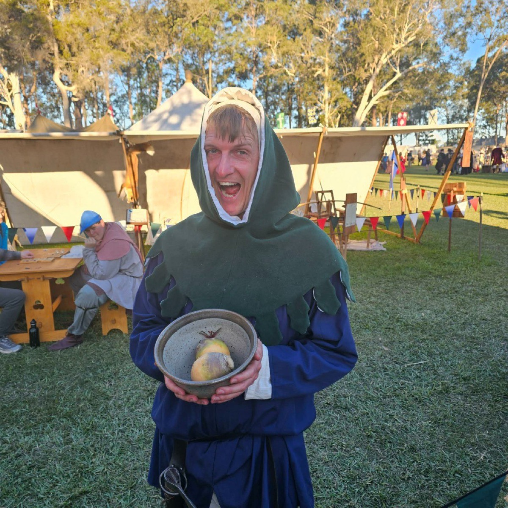

Jackson Stanton
The Turnip Farmer — Late Medieval (1350–1450)

Basic Information
Name: Jackson Stanton
Known as: The Turnip Farmer
Birth: 1378, the town of Stanton
Parents: Jack Stanton (turnip farmer) and his wife
Period: Late Medieval (1350–1450)
Company: Companie of the Badger
Current Year (Persona): c. 1410
Current Age: about 32
Status: Turnip farmer, yeoman archer, widower, and father
Timeline
1378 — Birth
Born in Stanton, the second son of Jack Stanton and his wife. A thin child, he surprises the town by surviving his first winter—and by reaching the age of fourteen.
Youth — Farm and Archery
Works the turnip farm with his father and elder brother. Takes part in the weekly Sunday archery practice demanded by the king. His slender frame means he is often overlooked in favour of rounder, healthier-looking men.
War and Loss
His brother is betrothed to a young woman of Stanton, but the wedding is postponed when the brother is enlisted for the war with France and sent instead into Scotland. About a year later, word comes that the English have been forced to retreat; three years after that, the family learns that Jackson’s brother is dead.
Marriage
Having never been chosen for trade with other villages, Jackson avoids the plague and remains one of the few unmarried men left nearby. He marries the woman who had been betrothed to his brother.
1405 — A Child
Jackson and his wife have a child, whom they both cherish for five full years.
c. 1410 — Widowhood
While Jackson is out planting turnips, oils that have soaked his wife’s dress catch fire as she prepares dinner, and she burns to death. With help from villagers, Jackson raises his daughter alone.
Detailed Narrative
A Thin Child of Stanton (1378)
In the town of Stanton, in 1378, Jack and his wife gave birth to their second son, whom they named Jackson. Everyone was surprised that this thin child—with barely any flesh on his cheekbones—survived his first winter, let alone lived to the age of fourteen.
Turnips and the Longbow
While growing up in Stanton, Jackson worked on a turnip farm with his father and older brother. He also took part in the weekly practice of archery every Sunday, as demanded by the king. Sadly, because of his thin frame, he was often overlooked in favour of rounder, healthier-looking gentlemen. Born in a time of war, however, he was eventually the only unmarried man within sight.
War in the North
His brother was betrothed to a young woman of Stanton, but the wedding was postponed when Jack’s elder son was enlisted to join the war with France. That brother was sent off to Scotland. About a year later they learned that the English had been forced to retreat, and after three years they discovered that Jackson’s brother was dead.
Marriage and Plague’s Shadow
Having not been chosen to go into trade with other villages, Jackson did not come into contact with the plague, and he was the only one left to marry the woman betrothed to his brother.
Joy and Fire (1405–c. 1410)
After they were married they had a child in 1405, whom they both cherished for five whole years. Sadly, as the wife was preparing dinner while Jackson was out planting turnips, the oils that covered her dress caused it to catch fire, burning her to death. Jackson managed to raise his daughter with assistance from members of the village.